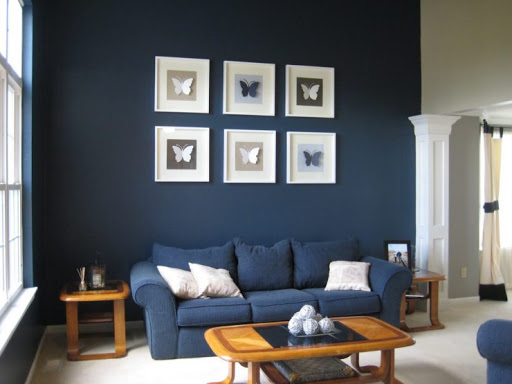

Лунный индиго
Сочетание контрастных цветов и оттенков: светлый и темный, насыщенный и приглушенный. В качестве акцентов задействуется яркие цвета, в частности, синий. Подходит для помещений, в которых отсутствует строгое разделение на функциональные зоны. Никаких коридоров или межкомнатных дверей – всё максимально открытое и функциональное. Решение подойдет для квартир-студий, где зонирования можно добиться с помощью мебели или цветовых акцентов.
Референсы: